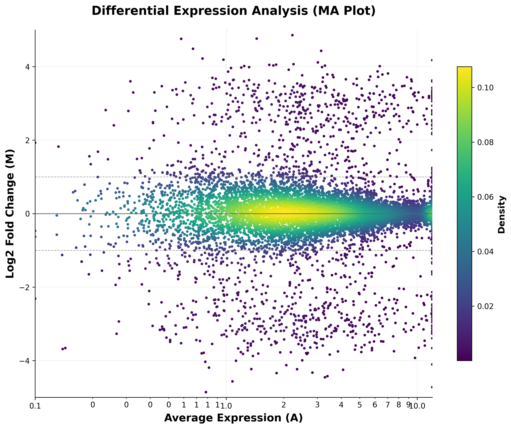
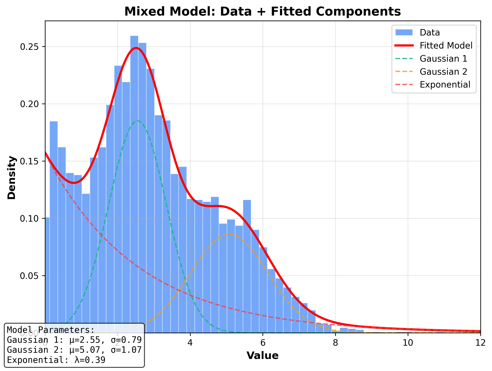
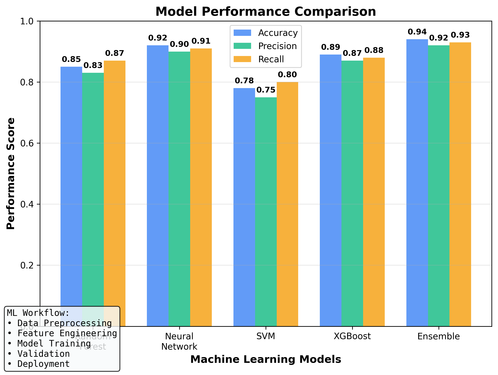
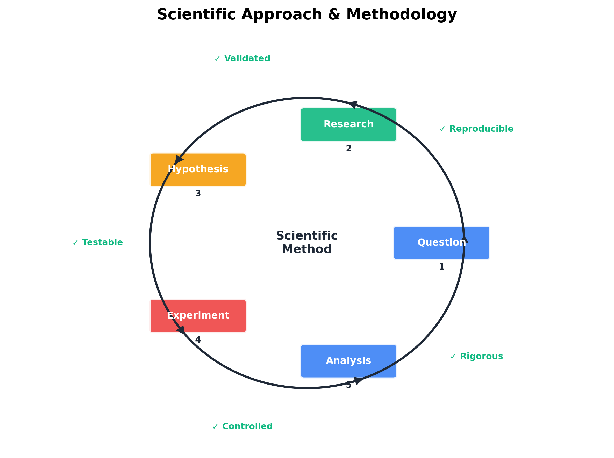

Expert data science consulting for bioinformatics, machine learning, and advanced analytics. Helping organizations unlock the full potential of their data.
Data scientist with deep expertise in biological data analysis and machine learning
I'm a data science consultant with over a decade of experience in bioinformatics, machine learning, and statistical analysis. My background in biological data analysis gives me a unique perspective on solving complex problems across industries.
Comprehensive data science solutions tailored to your specific needs
Transform complex data into intuitive, actionable visualizations that drive decision-making and reveal hidden patterns.

Advanced statistical modeling and hypothesis testing to ensure your insights are robust and scientifically sound.

Custom ML models and algorithms designed to predict outcomes, classify data, and automate decision processes.

Rigorous, evidence-based methodology following the scientific method to ensure reliable, reproducible, and validated results.

Real-world applications of data science across diverse domains
End-to-end genomic analysis pipelines using AWS HealthOmics, processing terabytes of sequencing data with automated quality control and custom statistical analyses.
Advanced signal decomposition and analysis for extracting meaningful information from complex time-series data.
Comprehensive analytics dashboards providing real-time insights into sales performance, customer behavior, and operational metrics.